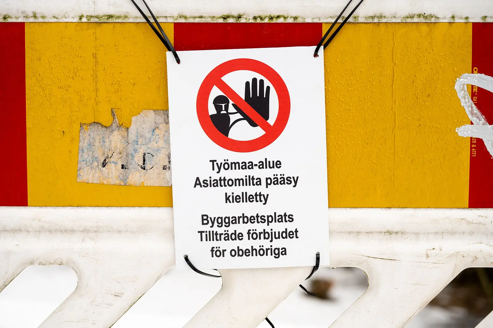

定义
en 或 zh 这样的语言代码表示一种语言。区域段是可选的，并且必须对应你真正为该区域发布的页面。本站用 zh-Hans 表示 /zh/ 下的中文页，并且不发明 /en/ 前缀。指向重定向、404 或薄镜像的代码，关联的不是那份文档。集合里应包含自我引用，让每页同时点名自己和对照页。
短答
hreflang 的语言和区域代码告诉抓取程序，哪个规范 URL 是某种语言或区域的对照页。只有当列出的每个 URL 都返回该版本、标注互相指向，并且 x-default 指向英文 URL 时，它们才成立。它们不分配排名。
哪些字段必须说同一件事
检查的是线上规范 URL，不是预发主机。英文规范 URL 和中文规范 URL 应互相列出。x-default 应列出英文 URL。代码应与页面语言一致：在只有英文正文的页面上标注 zh-Hans，是错配，不是市场策略。
页面上的问题
hreflang 不会翻译规格。即使代码完美，中文页丢掉了单位，GEO 健康仍然有实体问题。SEO 增长仍可能有该语言未覆盖的问题。把事实和代码当成分开的发现来修。
随页面一起走的信号
URL 存在之后，站点地图可以重复这些对照关系。站点地图条目不能代替页面上的标记，标记也不能代替内部链接。孤立的对照页仍然难以被发现。
hreflang 是文档之间的语言关系，不是排名开关。 Mika Visibility 要求每种已发布的语言保留同一套公司名、产品名、规格和应用，同时允许该市场的问题有真正的深度。英语在站点根目录，中文在 /zh/，不要增加 /en/ 前缀。hreflang 使用 en、zh-Hans，以及指向英文 URL 的 x-default。健康分数不会自动变成增长分数。
要检查什么
- 确认每个 hreflang URL 返回 200 和预期语言。
- 要求互相标注和自我引用。
- 把 x-default 指向英文规范 URL。
- 不要用 hreflang 掩盖缺失的规格。
它不声称什么
正确的 hreflang 代码不保证搜索排名或 AI 引用。Mika 不声称区域代码会赢得某个市场。
一个结构示例
这是教学示例，不是流量报告。英文产品 URL 把 zh-Hans 标到一个会重定向到首页的地址。回指标记不存在。修复是让两边的标注都指向真正的规范 URL，补上自我引用和 x-default，并复审获取。不承诺任何名次。

常见问题
hreflang 的语言和区域代码做什么？
hreflang 的语言和区域代码告诉抓取程序，哪个规范 URL 是某种语言或区域的对照页。只有当列出的每个 URL 都返回该版本、标注互相指向，并且 x-default 指向英文 URL 时，它们才成立。它们不分配排名。
本站使用哪些代码，它们必须指向什么？
en 或 zh 这样的语言代码表示一种语言。区域段是可选的，并且必须对应你真正为该区域发布的页面。本站用 zh-Hans 表示 /zh/ 下的中文页，并且不发明 /en/ 前缀。指向重定向、404 或薄镜像的代码，关联的不是那份文档。集合里应包含自我引用，让每页同时点名自己和对照页。
hreflang 代码能保证排名吗？
正确的 hreflang 代码不保证搜索排名或 AI 引用。Mika 不声称区域代码会赢得某个市场。
下一步
做一次结构化的 SEO 与 GEO 审计，看健康发现、增长缺口，以及可以执行的蓝图。
更清楚的实体、回答、证据和上下文，让页面更容易被理解和转述。任何回答产品中的结果都不保证。